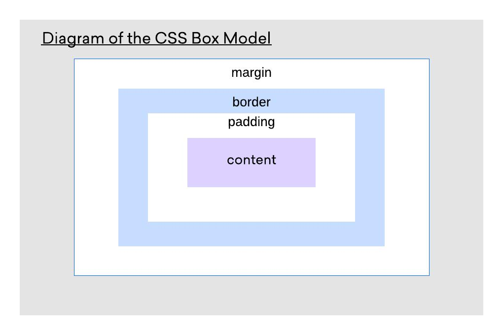
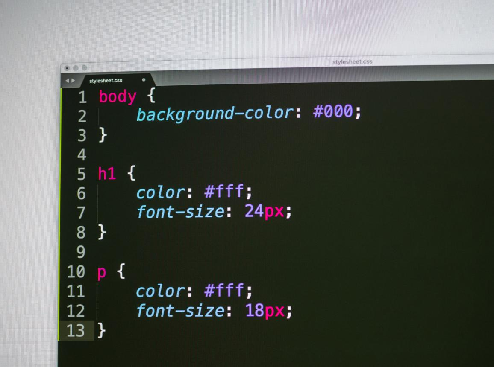
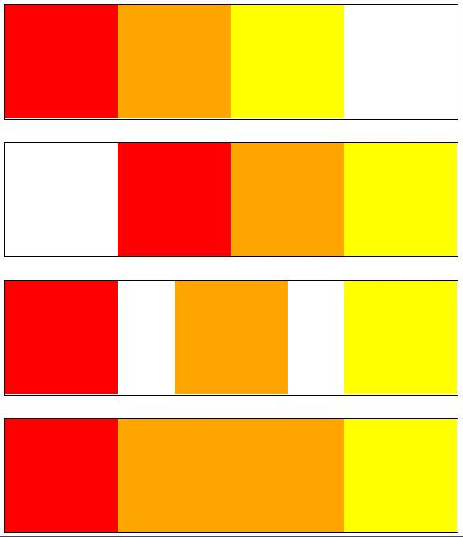

This is Parent Wrapper
Wrapper Position
What is Wrapper?
A wrapper is a container element used to group and organize webpage content together. It helps developers manage layout, spacing, and structure more easily using CSS.
Wrapper Position
Wrapper positioning is used to place content inside a fixed area or section of the webpage. It helps align text, images, and other elements in a clean and organized way.
Uses of Wrapper
Wrappers are mainly used for page structure, content alignment, maintaining spacing, and creating responsive layouts in web design.


